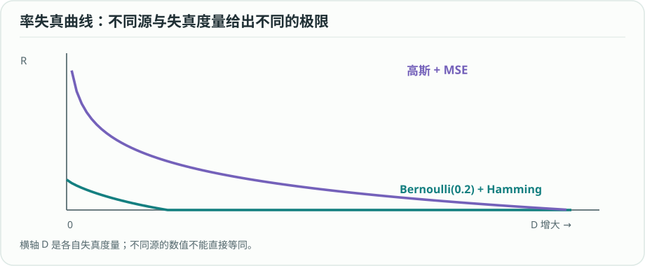
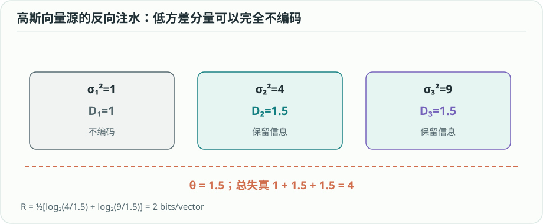

允许重构结果不完全相同，最少需要多少比特？
无损压缩要求接收端恢复原始符号；有损压缩则允许重构值 X̂ 与 X 不同，但必须规定“差多少算可以接受”。同一张图像若用像素 MSE、结构相似度或人类主观评分衡量，得到的失真与最优压缩策略都可能不同。
率失真理论把源分布和失真度量同时放进数学定义，回答给定平均失真预算 D 时，每个源符号至少需要多少比特。它不是某个 JPEG 编码器的实际压缩率，而是给定模型下所有编码器都无法突破的渐近界。
先定义逐符号失真，再定义块平均失真
失真函数 (d(x,hat x)ge0) 描述单个源符号与其重构值之间的代价。对长度 n 的源序列，常见逐符号可加失真为：
Hamming 失真把错误符号计为 1；平方误差把幅度差平方；感知失真则可以根据视觉或听觉系统的敏感性加权。改变 d 就改变了 R(D) 的定义，因此不同失真度量的“同一个 D”并不表示同样的质量。
率失真函数：在平均失真约束下最小化互信息
对离散无记忆信源 X 和单字母失真 d，率失真函数定义为：
单位是 bits/source symbol。这里优化的是所有可能的随机重构信道 (p(hat x|x))，不是某一个固定量化器。对标准记忆无关源编码模型，率失真定理把这个单字母量与渐近可达的编码速率联系起来：速率高于 R(D) 可使期望块平均失真达到 D；低于 R(D) 则不可能满足相应渐近约束。
R(D) 随 D 非增且为凸函数。允许更大的失真不会增加最小所需速率；但 D=0 与 H(X) 的关系要注明离散源、零失真定义等条件，不能把连续源的微分熵直接替换进去。
Bernoulli 源 + Hamming 失真：有闭式表达
令 X∼Bernoulli(p)，且采用二元 Hamming 失真 (d(x,hat x)=1{x ehat x})。当 (0le Dlemin(p,1-p)) 时：
当 D 达到 (min(p,1-p)) 后，编码器可恒输出更常见的符号，达到零速率；更大的 D 仍为 0。以 p=0.2 为例，D=0.1 时 R(D)=h₂(0.2)−h₂(0.1)≈0.2529 bit/符号。

源概率固定为 p=0.2；当 D≥0.2 时可恒输出 0，因此最小速率为 0。
高斯源与平方误差：R(D) 的对数闭式
若 X∼N(0,σ²)，并以均方误差 (d(x,hat x)=(x-hat x)^2) 衡量重构，则：
当 D→0 时，R(D) 发散；当 D≥σ² 时，始终输出均值 0 已能满足平均失真预算，因此不需要传递源信息。注意这条公式依赖高斯源、均方误差和渐近块编码假设。
向量高斯源的反向注水：不是把标量公式直接复制
若有多个独立高斯分量，方差分别为 σᵢ²，总失真预算为 D，最优失真分配遵循反向注水：
方差低于水位 θ 的分量可以直接不编码（其失真等于自身方差）；方差高于 θ 的分量被压到统一失真 θ。只有满足 σᵢ²>θ 的分量贡献正码率：
例：方差向量为 (1,4,9)，总失真预算 D=4。水位 θ=1.5，失真分配为 (1,1.5,1.5)，所以 R(D)=½[log₂(4/1.5)+log₂(9/1.5)]=2 bits/vector.

JPEG 与 MP3：工程系统逼近的是所选失真模型
经典基线 JPEG 的核心步骤包括 8×8 块 DCT、量化、系数扫描以及熵编码。DCT 是可逆线性变换（忽略有限精度实现误差）；量化把系数映射到有限格点，才是主要有损步骤。量化表、图像内容和后续游程/熵编码共同决定码率和重构误差。
MP3 等感知音频编码器还会使用心理声学模型估计掩蔽阈值并分配量化噪声。理论上可把它理解为对频率和时间区域采用感知加权失真，但真实标准的编码工具、帧结构和听觉模型远比一个简单 MSE 目标复杂。
来源与延伸阅读
- C. E. Shannon (1959), Coding Theorems for a Discrete Source with a Fidelity Criterion：离散信源率失真定理。
- Cover & Thomas, Elements of Information Theory, Chapter 13：二元源和高斯源率失真函数推导。
- Rate Distortion Bounds for Voice and Video：高斯源平方误差与反向注水回顾。
- ITU-T T.81 / ISO/IEC 10918-1：JPEG 基线编码标准。